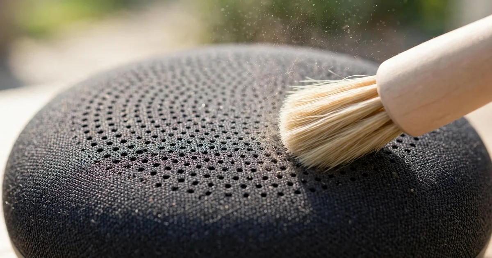

Why Smart Speakers Get Dusty So Fast
A smart speaker is always on, and it usually sits on a shelf, a kitchen counter, or a bedside table, where dust settles every day. Most smart speakers have a fabric cover, and fabric holds dust much more than smooth plastic does. The dust sits in the weave, and the speaker has to push sound through it.
The top of the speaker has tiny mic holes that listen for your voice. When dust covers those holes, the speaker hears you less well, and you have to repeat yourself or speak louder. Cleaning the top alone often fixes the hearing problem.
Smart speakers also stay plugged in all the time, so they are slightly warm. Warm air pulls dust toward them, and the dust sticks to the fabric. A quick weekly dusting stops it from building up.
Before You Start: Unplug and Mute the Mic
Unplug the smart speaker from the wall before you clean it. A smart speaker has no battery in most models, so unplugging it turns it off fully. Never clean a speaker that is plugged in.
If your speaker has a mic mute button, press it before you start. This stops the speaker from listening while you brush and wipe around the mic holes. Move the speaker to a clean, dry table with space around it, and put a dry towel under it to catch the dust.
Look at the whole speaker in good light. Check the fabric for dust, the top for dust in the mic holes, and the base for sticky marks. Check the manual if you still have it, because some models have a fabric cover that comes off and some do not.
How to Clean the Fabric Cover
Start with the fabric cover, the cloth wrapped around the speaker. Brush it gently with a soft dry brush, in short strokes, from top to bottom. A clean soft paintbrush or a makeup brush works well. Hold the speaker so the fabric faces down, and let the dust fall away from it.
For dust stuck in the weave, press a piece of soft tape lightly over the fabric and lift it off. The tape picks up loose dust. Do not press hard, and do not use strong tape, because it can leave glue on the fabric.
Never use a wet cloth on the fabric first. Wet dust turns into mud in the weave and is harder to remove. Brush it dry first, and only then wipe with a cloth that is just damp, if a mark is left.
How to Clean the Mic Holes on Top
The mic holes are the tiny holes on the top of the speaker. They are the most delicate part, so clean them with almost no pressure. Brush them very gently with a soft dry brush, in one direction, and wipe the top with a dry soft cloth.

Never push a pin, a needle, or a toothpick into a mic hole. The mic sits right behind the hole, and one small push can damage it for good. If dust sits deep in a hole, brush over it lightly and leave it. A soft brush is enough.
Do not blow hard into the mic holes, and do not use compressed air up close. A strong jet can push dust deeper into the hole. If you use a vacuum, use the lowest suction with a soft brush attachment, held a little away from the top.
How to Clean the Base and the Buttons
The base of the speaker collects dust and sticky marks from the table. Wipe it with a dry soft cloth. For a sticky mark, dampen a small corner of the cloth very lightly, wipe the mark, and dry the spot at once. Do not let water run into the power port.
Clean the buttons and the touch surface on top with a dry soft cloth. Dust around the buttons can make them feel sticky. Brush gently around the edges with a soft dry brush. Do not spray cleaner into the gaps, because liquid can run inside and damage the touch controls.
Check the power port before you plug the speaker back in. Blow gently or use a soft dry brush to clear dust from the opening. Never push a metal tool into the port, because it can bend the small pins inside.
What to Do After a Spill
Spills happen in kitchens, where many smart speakers live. If a drink spills on the speaker, act fast. Unplug it at once and do not ask it anything, because power plus liquid can damage the parts inside.
Wipe the outside with a dry cloth, then tilt the speaker so the liquid runs away from the mic holes and the ports. Let it dry fully in a place with moving air, for at least a day. Do not use a hair dryer on hot, because hot air can warp the fabric and the plastic.
Sugary drinks and juice leave a sticky layer even after the speaker looks dry. If the sound is still muffled after full drying, wipe the fabric again with a cloth that is only just damp, then dry it at once. If the sound does not improve, get the speaker checked, because the liquid may have reached the parts inside.
How to Use Sound to Clear Dust Inside
A brush cleans the outside of the fabric, but fine dust can sit deep inside where a brush cannot reach. Sound can help here. Our free dust sweep plays tones from 200 to 1500 Hz that shake dust loose from inside the grille.
To use it, dry the speaker fully first, then pair your phone to the smart speaker by Bluetooth and play the tones through it, or hold your phone close to the speaker while the tones play. Turn the volume up, let the tones run, and brush the fabric once more after they stop, to clear the dust that shook loose.
Do not run the tones many times in a row. If the sound does not improve, the problem is likely not dust. The same sound method works for smaller speakers too. Our guide on how to clean a Bluetooth speaker shows the steps for a portable speaker that uses the same tones.
Cleaning a Smart Speaker in the Kitchen
Kitchen smart speakers collect grease as well as dust, from cooking steam. Wipe the fabric with a dry cloth first to take off the dust, then wipe with a cloth that is only just damp, with a tiny bit of mild soap on it. Wipe again with a clean damp cloth, and dry it fully at once.
Do not use strong cleaners, bleach, or kitchen degreaser on the speaker. They can fade the fabric colour and damage the surface. A soft cloth and a little patience work better.
Keep the speaker away from the stove and the sink. Steam and splashes reach it every day in a bad spot, and no amount of cleaning fixes a speaker that keeps getting wet. A shelf a little away from the stove is a better home for it.
Mistakes That Can Damage a Smart Speaker
The biggest mistake is spraying cleaner straight onto the speaker. Spray runs into the mic holes and soaks the fabric, and it can damage the mic and the speaker inside. Put cleaner on a cloth first, never on the speaker.
Do not wash a smart speaker with water or wipe it with a soaking wet cloth. Even a splash resistant model is not made to be washed, and water in the fabric or the ports can damage the speaker. Wipe only, and keep water away.
Do not use a pressure washer, a strong vacuum, or compressed air up close. A strong jet can push dust deeper into the fabric, bend the thin parts behind it, or tear the fabric. A soft brush is safer and works better.
Do not open the speaker to clean inside. The parts inside are wired and easy to break, and opening the box can void the warranty. If the sound is bad after a full clean, take it to a repair shop.
How to Keep a Smart Speaker Clean Longer
Dust the speaker once a week with a dry cloth. It takes less than a minute, and it stops dust from settling into the fabric. Brush the fabric cover once a month if you use the speaker every day.
Keep the speaker away from open windows and dusty shelves. A closed shelf or a spot away from the window collects far less dust. Do not put drinks on the same table right next to it.
Check the mic holes once a month. If you want a full routine for any speaker, read our guide on how to clean a speaker safely at home. For a speaker you carry around, our guide on how to clean a portable speaker covers the same grille steps.
Smart Speaker vs Bluetooth Speaker Cleaning
A smart speaker and a Bluetooth speaker look similar, but they are cleaned a little differently. A smart speaker stays plugged in and has mic holes on top that must stay clear, so the top needs a gentle brush every week. A Bluetooth speaker runs on a battery and goes outdoors, so it needs more care for water, sand, and mud.
The fabric cover is the same on both, and the soft brush steps are the same. The difference is the mic. A Bluetooth speaker has no mic holes to protect, while a smart speaker does, so never push anything into the top of a smart speaker.
If you own both, clean the smart speaker weekly and the Bluetooth speaker after every outdoor use. The same dust sweep tones work for both.
Final Thought
Cleaning a smart speaker is simple: unplug it, brush the fabric gently, wipe the top so the mic holes stay clear, and keep water and spray away. The fabric is where most of the dust sits, so start there, and the clear sound usually comes back with that one step. After a spill, dry it fully before you plug it in again, and never wash it with water. A quick dusting once a week keeps it hearing you well for years.
Frequently Asked Questions (FAQs)
No. Do not wash a smart speaker with water. Wipe the outside with a dry cloth, and use a cloth that is only just damp for a sticky mark, then dry it at once. Water in the fabric, the mic holes, or the ports can damage the speaker.
A soft brush is safer than a vacuum. If you use a vacuum, use the lowest suction with a soft brush attachment and hold it a little away from the fabric. Strong suction can pull the fabric loose or bend the thin parts behind it.
Dust in the mic holes is a common cause. Brush the top of the speaker gently with a soft dry brush and wipe it with a dry cloth. Do not push anything into the mic holes. If it still does not hear you, check the mic mute button and the Wi-Fi connection.
No. Never spray cleaner, glass cleaner, or disinfectant straight onto a smart speaker. Spray can reach the mic holes and the fabric and damage them. Put a tiny amount on a cloth first, wipe, and dry it at once.
Dust it once a week with a dry cloth, and brush the fabric cover once a month. A quick wipe takes less than a minute and stops dust from building up in the fabric and the mic holes.
Previous Post: How to Clean Party Speaker Safely at Home